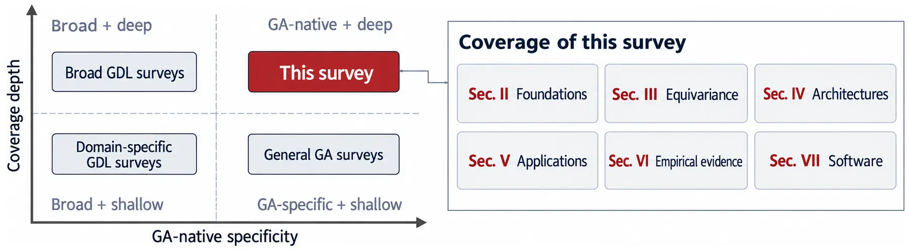
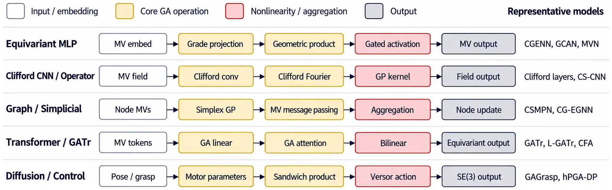

Geometric Algebra for Neural Networks: A Survey
1Princeton University 2Stanford University
Abstract

Which algebra fits your task?
Pick the need that best describes your data. The recommendation, its rationale and the conditions to avoid it come straight from the survey’s algebra-selection guide (§II-D, Table 2).
Paper explorer
Every work the survey cites, tagged by where it is discussed. Filter by topic, algebra and year, or search titles, authors and model names. Each entry quotes the sentence the survey uses to place it.
Architecture families
GA-native networks reuse a small set of primitives (grade projections, geometric products, versor actions, inner-product attention) and combine them into six families (§IV, Table 5). Open a family to see its representative works in the explorer.

How each algebra encodes geometry
What the evidence supports
Results are compared only within matched benchmark settings (§VI, Table 7). No setting yet reaches “Strong” by archival-survey standards.
When is GA worth it?
Equivariant paradigms compared along the dimensions that matter for architecture selection (§III-D, Table 3). GA-native networks are the only paradigm with native support for both mixed geometric entities and join/meet operations; mature non-GA methods remain the stronger default when the symmetry and data type are already well matched.
Recommended benchmarking practice
Software
Libraries for multivectors and Clifford operations (§VII, Table 8). Only the first group offers native deep-learning tensor support; the rest serve preprocessing, prototyping or performance-critical kernels.
Figures
Cite
If the survey or this explorer helps your work, please cite:
@article{zhong2026geometric,
title = {Geometric Algebra for Neural Networks: A Survey},
author = {Zhong, Tao and Fong, Kaison and Wang, Keqin and
Allen-Blanchette, Christine},
journal = {arXiv preprint arXiv:2610.30121},
year = {2026},
url = {https://arxiv.org/abs/2610.30121}
}
Add a paper
Missed a GA-native network, or published a new one? This page doubles as an awesome-list, and pull requests are welcome.
- Fork the repository.
- Append an entry to
data/community.jsonwith a title, authors, year, venue, link, and the algebra if it is GA-native. - Run
python3 scripts/build_readme.pyto refresh the README list, then open a pull request.
Community additions appear in the explorer with a “community” mark until they are reviewed for the next survey revision. Corrections to survey entries are best sent as an issue.